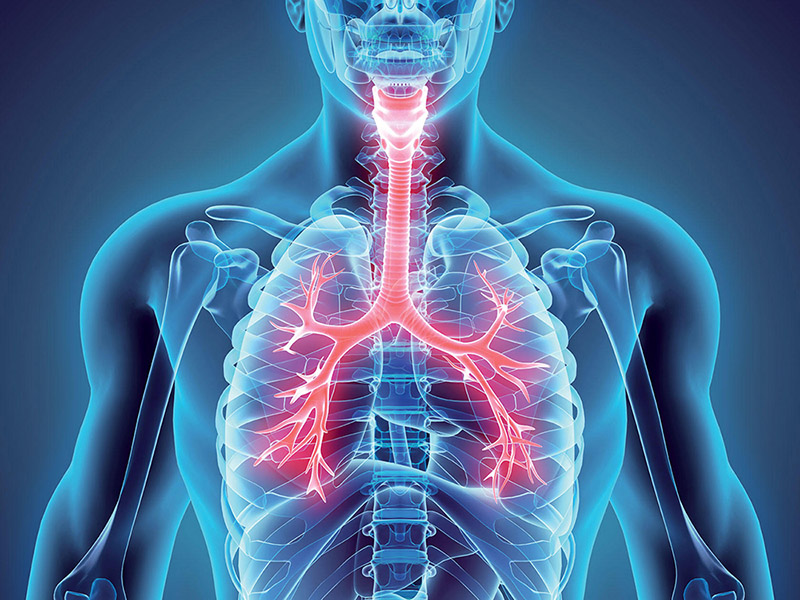
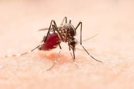
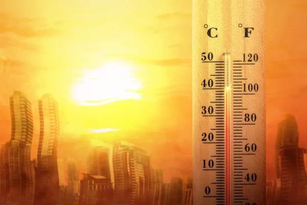
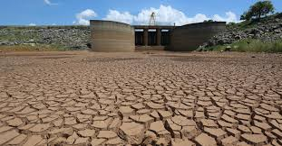

Aumento de Doenças Respiratórias
Com o aumento da poluição do ar devido ao aquecimento global, há uma maior incidência de doenças respiratórias, como asma e bronquite, especialmente em áreas urbanas.
Expansão de Doenças Tropicais
O aumento das temperaturas favorece a proliferação de vetores, como mosquitos, ampliando a disseminação de doenças tropicais, como dengue, zika e malária para novas áreas.
Impacto das Ondas de Calor
As ondas de calor, cada vez mais frequentes e intensas, causam desidratação, insolação e podem levar ao aumento da mortalidade, especialmente entre idosos e crianças.
Estresse Hídrico e Escassez de Água
Com a alteração dos padrões de chuva, o aquecimento global intensifica as secas e afeta o abastecimento de água. Isso leva ao estresse hídrico, impactando o consumo e a higiene, o que aumenta os riscos de doenças.
Aumento de Problemas Mentais devido a Desastres
O aumento de desastres naturais e situações de crise causadas pelo aquecimento global gera estresse e ansiedade. Muitas pessoas enfrentam transtornos mentais como TEPT, depressão e ansiedade.